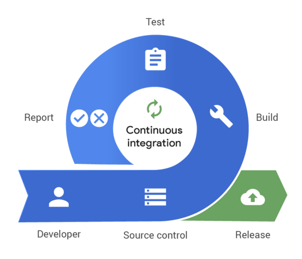
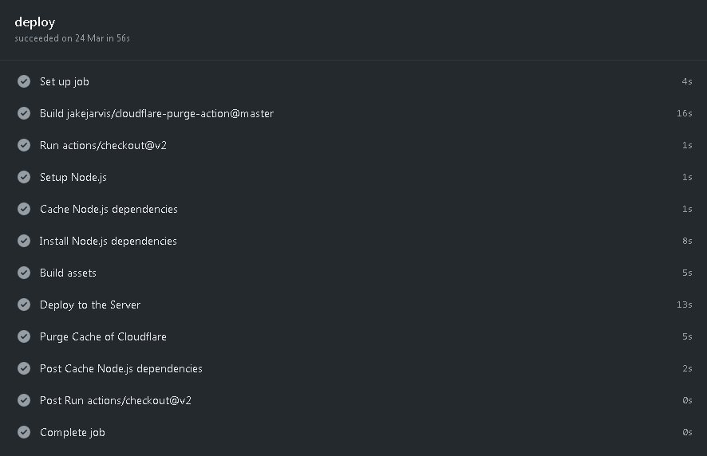

Página 5 / 6
Continuous Deployment / Integration
Si estamos en la época de antes, seguramente con cada cambio que hagamos en nuestro código subiríamos esos cambios repetitivamente por FTP hacia nuestro servidor, y dependiendo del cambio, comprimir la carpeta del proyecto y subirla una y otra vez cada que haga un cambio. Esto suena tedioso e ineficiente. Sobre todo lo ultimo.
Está la opción de desarrollar localmente en vez de hacer esto, y es lo que hacemos todo, sin embargo hay desarrolladores que utilizan la primera. Pero, ¿qué pasa cuando quieres ver tus cambios en producción, o el cliente te esta pidiendo una muestra de como esta el proyecto, tienes que hacer lo que comenté anteriormente.
Y esto es solamente en proyectos web sencillos, por que si estuviéramos hablando de desarrollo móvil en donde tienes que compilar la APK a cada momento de un cambio, o en los casos que comenté, se vuelve un proceso muy tedioso, por que no es tan sencillo como arrastrar la carpeta al FileZilla. El peor caso es en los proyectos de lenguajes compilados como C o C++, proyectos grandes, como libCurl, Vim, entre otros. Compilar esto es un proceso que no puedes saltarte para desarrollar pero hacerlo en cada cambio, y sobre todo en producción en el que necesitas tener instalado un compilador de C o C++ en la máquina donde quieres compilarlo.
Es aquí donde entra algo llamado GitHub Actions, los famosos Continuous Deployment y Continuous Integration, parecidos a Azure Pipelines o Travis CI. Y se utilizan para automatizar todos los procesos que comenté anteriormente, por que todo lo que sea repetitivo se puede automatizar.
¿Por qué hablo de esto?, por que esto fue lo que yo usé para automatizar el proceso de despliegue de los proyectos que cree. En cada cambio que yo suba a producción se despliega una serie de procesos automáticos en donde se ejecutan cada uno de los procesos, para luego subir a www.franciscofajardo.com, como si se tratara de mi persona arrastrando la carpeta hacia el FileZilla. Todo automático, sin yo mover un solo dedo. Y esto es lo bueno de estas cosas, los humanos cometemos errores, los procesos automatizados no.

Veamos el proceso que se ejecuta cada vez que hago un commit al repositorio de código del Sistema Web AF:

Vemos en el primer proceso que primero pone en marcha el trabajo, en el segundo compila una imagen que se usara más tarde, en el tercero hace un checkout del código con Git, luego instala Node.js, y cachea las dependencias para acelerar el proceso siguiente, instala las dependencias (como ya estan cacheadas es más rapido). Luego después de instalar todo, se compilan los assets estáticos con Laravel Mix, los archivos CSS y JavaScript. Después se sube todo esto al servidor por FTP (tal y como yo lo haría arrastrando la carpeta al FileZilla). En este caso en www.franciscofajardo.com tenemos a Cloudflare por asuntos de seguridad y rendimiento por lo que se ejecuta el otro proceso de limpiar la cache de Cloudflare para que se puedan ver los cambios. Y los siguientes pasos son para finalizar.
¿Qué logramos con esto?, ahorrar tiempo y evitar gastar tiempo innecesario. Simplemente lo que yo hago cuando voy a desarrollar una nueva función para el Sistema Web AF o cualquiera de los otros sistemas es que inicio mi servidor local para visualizar los cambios, y desarrollo mi funcionalidad, luego de que hago todo esto, y ya esta lista, simplemente hago commit con Git, y lo subo a GitHub, y ya. No tengo que hacer más nada, no tengo que comprimir toda la carpeta del proyecto y subirla yo mismo, todos este proceso esta automatizado. Lo que yo tardaría haciendo en 3 minutos subiendo la carpeta comprimida, GitHub Actions lo hace en menos de 1 minuto, y sin yo mover un solo dedo.